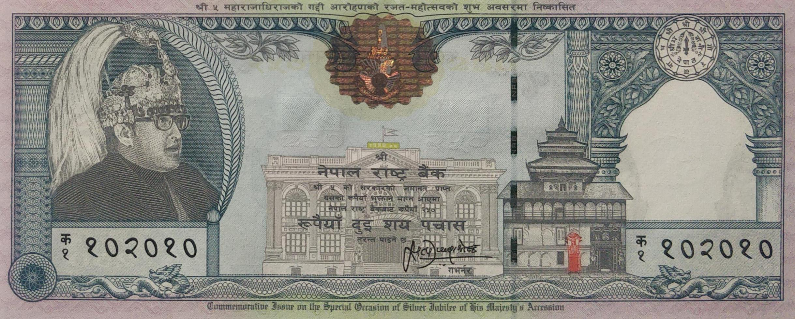
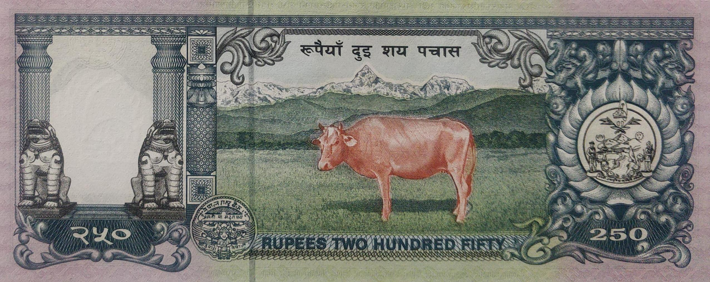

Home
About
Nepalese Paper Money
Nepalese Coins
Note of twohundred-fifty rupees issued during King Birendra's rule
 
Satyendra Pyara Shrestha(Jan 18, 1995 to Jan 17, 2000)
Facts:
Domination:
Rupees 250
Signature:
10-Satyendra Pyara Shrestha
Printer:
Thomas De La Rue & Company, Ltd, UK
Issued date:
Between 1956 to 1973
Front:
King Gyanendra wearing military uniform with a cap at left, Mahabaudha temple at center
Back:
Traditional wooden rotating swing
Watermark:
Plumed crown
Size:
107 x 70mm